Argovis Data Visualization and Extraction Tutorials¶
Tutorials describe several website use cases step by step and offers the user a break from reading. The first tutorial narrates a typical use case on how a user can make a custom selection around the Labrador sea at 500-1000 meters during Summer 2017, and download the data and its metadata table locally. The second tutorial has a user track a particular profile over time, view its profiles, examine unusually cold sea surface temperatures, and download a profile directly from the IFREMER GDAC. More data selection and delivery methods are available using the API, covered in Section~\ref{sec:api}. \url{www.itsonlyamodel.us} has more tutorials.
Labrador Sea Summer Selection¶
This tutorial describes how to make selections on the main page. First, a shape is drawn, followed by a date pressure range. The profiles are viewed and downloaded on a separate page.
Visit www.argovis.com. You will be greeted by a Web Mercator projection showing profiles reported by the DACS from the past seven days. Sidebar includes a map reset button, which will return the map to its original state. The clear map button will swipes all profile icons off the map.
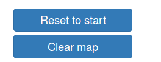
Zoom into the Labrador sea, east of Greenland. You can zoom in by using the mouse wheel or by clicking the zoom button on the top left corner of the map
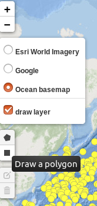
Click the polygon button, located below the zoom buttons and map tile layers on the top left corner of the map.
Create a polygon by clicking on the region around the general outline of the Labrador Sea. Circle the polygon nodes back to the point of origin to complete the shape. Upon completion, profiles will only show within the polygon, and a popup will appear, as shown below. With the shape selected, we next need to specify a date and pressure range.
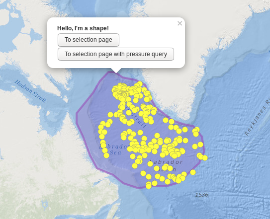
Click on the date input element located on the sidebar. A date range window will appear comprised of three columns. The left column is an array of buttons with relative times that users can select. The center and right columns display an interactive scrollable calendar that allows for date selections.
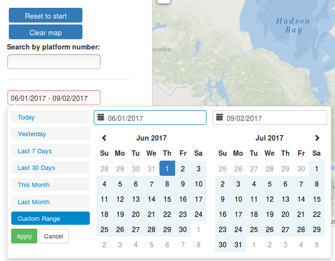
Create a polygon by clicking on the region around the general outline of the Labrador Sea. Circle the polygon nodes back to the point of origin to complete the shape. Upon completion, profiles will only show within the polygon, and a popup will appear. With the shape selected, we next need to specify a date and pressure range.
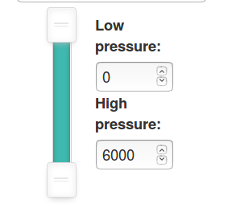
Open the selection page by clicking on the shape popup button labeled "To selection page with pressure query. This page can be viewed here
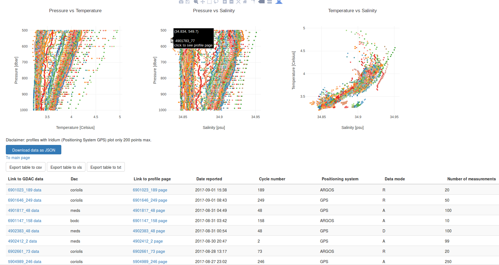
The T/S/P plots showing selection data is instantly available for view. Each color represents a single profile. Hovering the cursor shows the detail. Clicking on while the cursor is hovering over a profile will open the page for that particular profile.
Download the raw data by clicking on the "Download Data" button. A new tab on the browser will open, showing the data in a JSON format.
Download the table of profile Metadata as a .csv file by clicking on the "Download as csv" button. Excel spreadsheet or text format is also available.
You should now have as much data as the database for this section locally.
Track a single platform in the Southern Ocean¶
This tutorial shows Argovis's ability for a user to track a particular profile over time, view its profiles, examine unusually cold sea surface temperatures, and download a profile directly from the IFREMER GDAC.
Visit www.argovis.com. You are greeted by a Web Mercator projection showing profiles reported by the DACS from the past seven days.
Click the "Southern Polar Stereo Projection" button that redirects you to a new page with a map that uses a Southern polar stereographic projection.
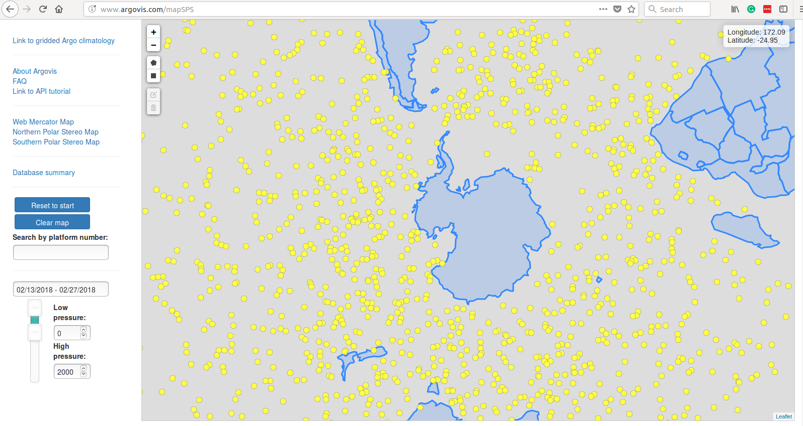
Clear the map by clicking the "Clear Map" button located the sidebar.
Enter the WMO/platform number 1901386 in the "Search by platform number" textbox. The profiles generated by this platform will be displayed circling Antartica.
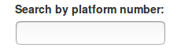
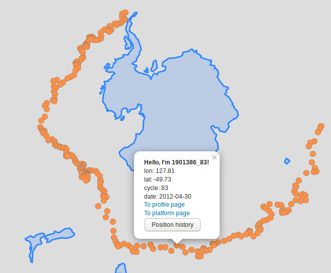
Click on any orange point to bring up a profile popup window. Click the "To platform page" link to open up the page in another browser tab. The page resides here.
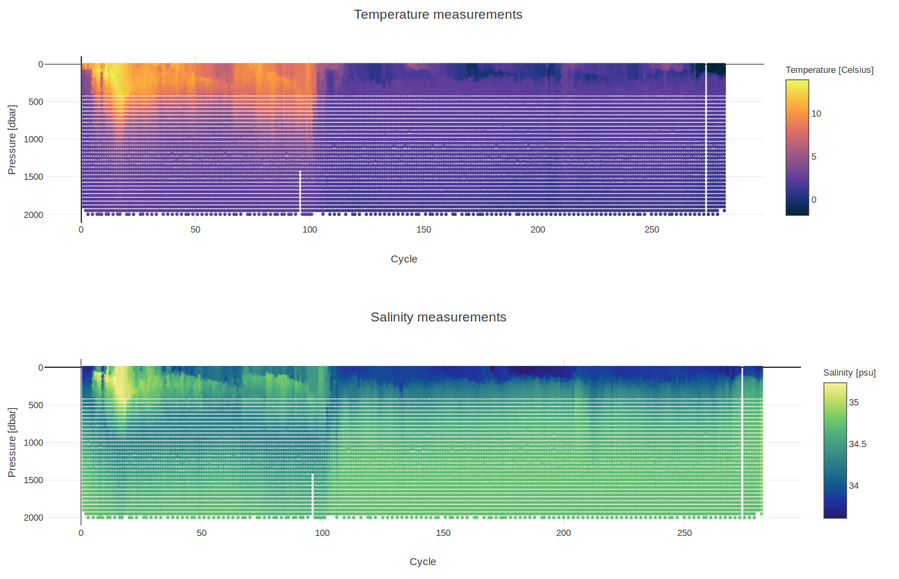
Color plot of shows temperature going unusually low at the surface. Negative temperatures may be an error and will be investigated as an exercise.
Click on the dark purple region in the upper right corner of temperature color plot. In this case. A new browser tab will open, showing the profile page you just clicked. In this example, profile 1901386_281 was selected and is shown below. This page resides at here.
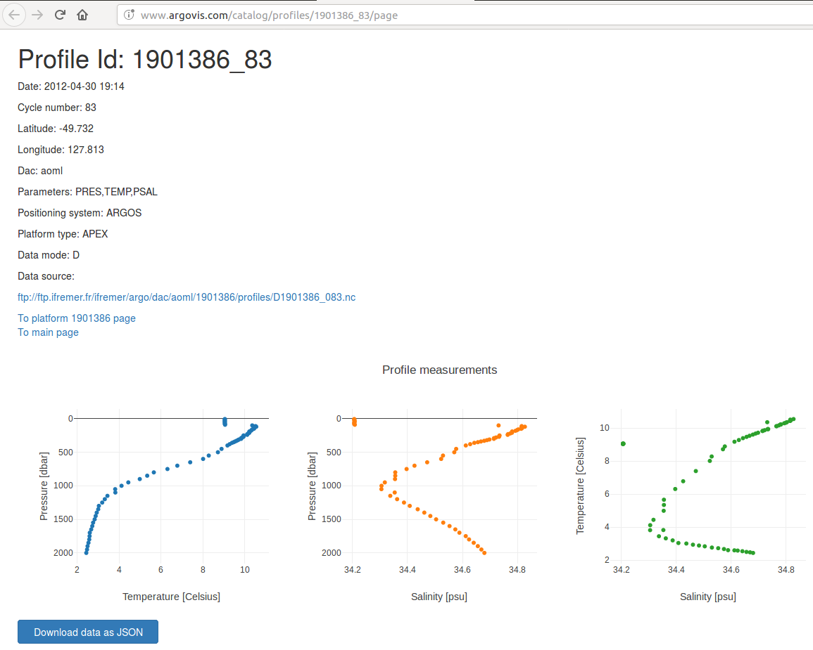
The date this profile surfaced was on November 3rd, 2017. Ice sheets melt, making the surface temperatures cold and brackish. Salinity is around 34 PSU. The profile location is close to the Antartic peninsula, indicating that the ice sheets connected to the land are relatively close. Most likely, this data is accurate. As it turns out, sea temperatures freeze at about -2 Celsius. To make sure that the reported data matches the original netCDF file reported in the GDAC the profile page includes a link that will download the netCDF file when clicked.
Click on the link [ftp://ftp.ifremer.fr/ifremer/argo/dac/aoml/1901386/profiles/R1901386_281.nc[(ftp://ftp.ifremer.fr/ifremer/argo/dac/aoml/1901386/profiles/R1901386_281.nc) to download this profile data directly from the ifremer GDAC. You now have the original data opened with software compatible with netCDF files to compare to the unusually low sea surface temperatures.
Value added educational tool: Argovis video tutorials¶
Video tutorials are included here. The videos guide users through a series of Argovis's features. The advantage of videos over paper tutorials is that users can view, pause, and rewind videos. Youtube also broadcasts the videos over their website, increasing the odds of new users stumbling upon the app. Youtube videos also provide feedback input. The user community can voice support, frustrations and requests in the comments.